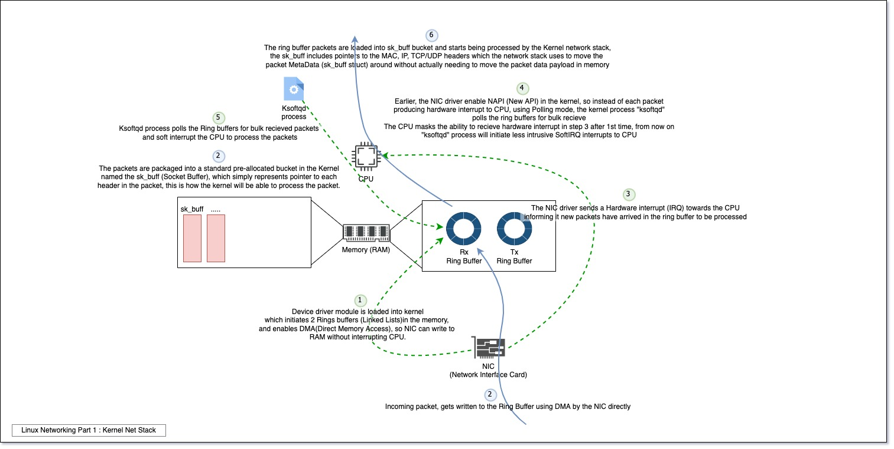
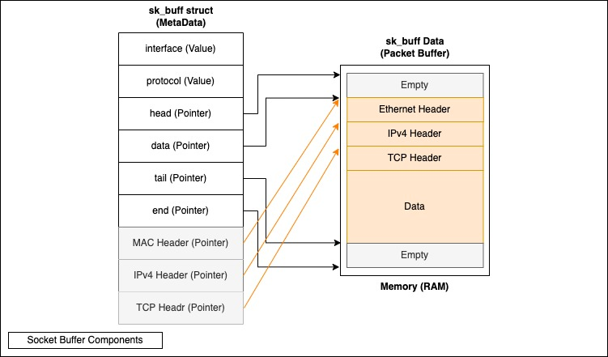
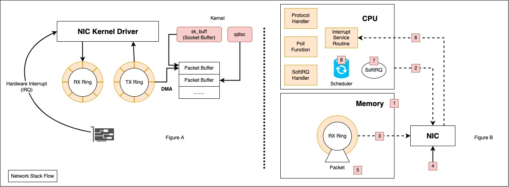

Linux Networking Part 1 : Kernel Net Stack
Table Of Contents
Introduction to series
1st thing 1st, its very handy to download the uncompiled Linux Kernel code from here https://www.kernel.org.
In this series, we will be exploring the way networking in the server world and how it evolved from using the traditional Linux Kernel Networking stack to network virtualization using OVS and towards handling the load of Telco using NFV and SR-IOV.
This article in a pinch
The following diagram only shows in a brief what happens to a packet in the Linux Kernel if you would like to glance by, but for more in depth and handy details, keep on reading.

Part 1 : Linux Network Stack
In this article, we are the basic flow IPv4/TCP traffic in Linux Kernel following Jiri Binc’s talk in DevConf CZ 2018, where he beautifully laied out the packet flow for the whole 7 layers of OSI in the Linux Kernel. Before we get to the flow path, there is some helper tools and concepts we should be familiar with:
1) Ring Buffers
At bootup of NIC devie and loading its driver module by the Kernel, the drivers starts by allocating Rx(Recieve) and Tx(Transmission) queues or buffers refered to as Ring Buffers in the device memory, usually the DMA part of the kernel space of memory, you can check the Max and configured sizes of these buffers :
# ethtool -g INTERFACE_NAME
Ring parameters for ens192:
Pre-set maximums:
RX: 4096 <<<<<<<<<<<<<<<, Max size in bytes
RX Mini: 2048
RX Jumbo: 4096
TX: 4096 <<<<<<<<<<<<<<<, Max size in bytes
Current hardware settings:
RX: 1024 <<<<<<<<<<<<<<<, Configured size in bytes
RX Mini: 128
RX Jumbo: 512
TX: 512 <<<<<<<<<<<<<<<, Configured size in bytes
In earlier versions of the kernel, a packet arriving to those buffers, would trigger a hardware interrupt to the CPU per packet, which is very intrusive, but thankfully NAPI was introduced to help with this issue, below you will get to know it more.
2) Socket Buffers (sk_buff)
sk_buff (Socket buffer), linux interacts with a packet/cell/segment or whaterver the recieved network unit using the Socket Buffer (sk_buff), and each sk_buff’s data and metadata (Headers) are treated separatly so kernel does not have to move the packet in memory, socket buffer acts like bucket, they hold the segment data until its done being processed, socket buffers donot get destroyed with packets, they are released and reallocated to new packets, also when they are utilized, the CPU creates new sk_buffs (new buckets) to handle the additional traffic.
Side Note: “sk_buff” and “skb” are interchangable, while you will find skb widely used in the kernel code sk_buff consists of (shown in figure below):
- packet buffer (sk_buff data) : a place where the actual packet and data are stored in kernel space memory (DMA memory space - will explore the concept of DMA below), pointed to using the sk_buff struct, the size of the allocated SKB is equal to TCP MSS+Headroom to allow for MSS to change according to connection and user modifications.
- sk_buff struct (Socket Buffer Metadata) : MetaData about the packet stored in packet buffers (Data), which includes pointers and values, they look as follows, keep in mind these are just a part of the sk_buff struct, to read the details of sk_buff.h struct, you can find it here:

- Interface (input_dev) : refers to the interface name the packet arrived at.
- Protocol : IPv4, IPv6 and so on.
- Head : pointer to the start of the sk_buff, which actually starts with an empty space giving headroom for extra headers, like a VLAN tag for instacnce.
- Data : the data pointer does not indicate the start of data, rather its used dynamically in the stack functions to pop and push headers, so fo example in the kernel when you say pop Ethernet header, all that actually happens is that the data pointer moves to the start of the IP Header, so no headers are physically popped in the memory.
- Tail : indicates points to the end of the data part and start of the empty part of the sk_buffer, again this empty part is used for diffirent sized packets, since the sk_buffer is sized according to the MTU configured.
- End : points to the end of the sk_buff in memory .
- MAC & IP & TCP header pointers are always stored in the sk_buff metadata, enabling to call them directly without needing to do poping and pushing actions on the sk_buff
- cloned : the head of the SKB may be cloned, not the data though.
Note : the packet does not get duplicated in Kernel, actual packet data stays in the packet buffers, with each clone or copy, the packet buffer stays intact, instead a new sk_buff (AKA SKB) is created, so new Metadata pointing to the existing packet buffer, although no copying of the packet in the Kernel, the packet is copied it reaches the application and the SKB is released.
3) Kernel Interrupts (IRQ vs SoftIRQ)
Simply, interrupts are used to stop the CPU from what it is doing and work on the interrupter’s part instead, there are models of interrupts, each include many many types, but following you can see there are two categories for these interrupts.
- Top-Half Interrupts (Hardware Interrupt) : These kind of interrupts is very costly, and as a result the Interrupt handler masks it after 1st use, and then after that the NIC driver starts to use the SoftIRQ (Software interrupt) instead which can be interrupted by itself, you can observe these interrupts :
$ cat /proc/interrupts
## These are the hardware interrupts, including the IRQ ID , the CPU and the number of interrupts of this type that was triggered .
CPU0 CPU1 CPU2 CPU3 CPU4
0: 28 0 0 0 0 IO-APIC 2-edge timer
1: 0 0 0 0 0 IO-APIC 1-edge i8042
8: 0 0 0 0 0 IO-APIC 8-edge rtc0
9: 0 0 0 0 0 IO-APIC 9-fasteoi acpi
12: 0 0 0 0 0 IO-APIC 12-edge i8042
14: 0 0 0 0 0 IO-APIC 14-edge ata_piix
15: 0 0 0 0 0 IO-APIC 15-edge ata_piix
Each interrupt (Hardware Interrupt) is identified by a vector which is a one byte identifier, ranging 0-255, from 0-31 are what are called Exceptions (Non-Maskable) interrupts, range 32-47 are maskable interrupts, from 48 to 255 are allocated to Software interrupts (SoftIRQ).
Quickly, there are 3 types of Hardware interrupts you will face in the output above, MSI-X, MSI, and legacy IRQs, in a brief MSI stands for Message Signaled Interrupts which replaces the old way of handling interrupt using single pysical pin in the CPU socket for each device. You can read about MSI and other types of hardware interrupts here https://en.wikipedia.org/wiki/Message_Signaled_Interrupts. Also for more info about Hardware interrupts, check this great paper “Linux Interrupts : The basic concepts”.
- Bottom-Half Interrupts (Software Interrupt) : SoftIRQs runs a queue per CPU, you can find them in the ps output, formated as [ksoftiqd/CPU_Number], these queues polls the device driver for processing traffic, instead of device (NIC) hardware interrupting the CPU each time it recieves traffic, you can see recieve and transmission queues :
# SoftIRQs queues process
$ ps aux | grep ksoftirqd
root 14 0.0 0.0 0 0 ? S 22:56 0:00 [ksoftirqd/0]
root 23 0.0 0.0 0 0 ? S 22:56 0:00 [ksoftirqd/1]
root 29 0.0 0.0 0 0 ? S 22:56 0:00 [ksoftirqd/2]
root 35 0.0 0.0 0 0 ? S 22:56 0:00 [ksoftirqd/3]
root 41 0.0 0.0 0 0 ? S 22:56 0:00 [ksoftirqd/4]
# Monitoring the Rx and Tx buffers :
$ watch -n1 grep RX /proc/softirqs
Every 1.0s: grep RX /proc/softirqs
NET_RX: 0 2 0 122
$ watch -n1 grep TX /proc/softirqs
Every 1.0s: grep TX /proc/softirqs
NET_TX: 0 0 0 0
3) Other quick concepts
- DMA (Direct Memory Access) : NIC devices are PCIe devices, previously in order to write something to the memory, they had to interrupt the CPU, so the CPU copies the packet to a register and then write it to memory, DMA provides non CPU resources with direct access to the memory without interrupting the CPU, example, when a NIC (Network Interface Card - Hardware) has an Ethernet segment that it wants to write to memory, it uses DMA to directly write it to the Memory, without wasting valuable CPU cycles, these DMA writing calls coming from the NIC are redirected by the NorthBridge on the moterhboard to the RAM instead of the CPU intresting to read more about memory allocation in this article “Allocating Memory for DMA in Linux - by BLAKE RAIN”.
- Ring Buffers : the NIC and the NIC drivers share a TX and RX ring buffers which basically consists of pointers to the location of packet buffers in the memory, they donot contain data, they are only memory pointers.
- Top half and Bottom half : when a packet is DMAed by the NIC to the memory (DMA is a place in Kernel Memory space where NIC card has access to without need for CPU), an Intrupet (SoftIRQ - Soft Interrupt Request) is sent by the NIC to the CPU informing it that a new packet arrived and waiting to be processed, Top half refers to the actions taken at 1st by the CPU, so instead of stopping everything to process this packet, which can be intrusive, it just acknowledges the intrupt and schedules the Bottom half (whcih is the rest of action that will be taken to process the packet) for later.
- Context Switching : the process of moving between the UserSpace Context and the KernelSpace context for a process, which consumes CPU cycles.
- System Calls : Simply put, system calls are used by user in UserSpace to request service from KernelSpace,
- NAPI - for recieved traffic : (New API - need Hardware support), Extension to device drivers designed for network devices to lower the number of interrupts for recieving packets, which comes into effect when there is a huge amount of packets recieved, but it still works in conjunction with normal intrupption process, it also helps with throttling traffic, if the NIC is recieving too much traffic, the NAPI performs dropping the packets on the NIC level without the need to alert/interrupt the kernel, NAPI is only effective on packet recieve events .
- SoftIRQ : The “softIRQ” system in the Linux kernel is a system that kernel uses to process work outside of the device driver IRQ context, device drivers IRQ (Interrupts) are normally of the highest priority for the Linux kernel, and they pause any other types of intrrupts when they arrive, KsoftIRQ is the queue initiated as a thread per CPU very early on in the Kernel, they handle the SoftIRQ queueing, you can see these queues counters using
$ cat /proc/softirqs - ISR (Interrupt Service Routine) : A function in the Kernel responsible for figuring out the nature of the interrupt and what actions to be executed after which the CPU resumes to process previously paused processes.
Network flow in brief
 Figure B : simple explanation of what is being allocated and how packet goes though Kernel :
- Very early at Kernel boot up, the CPU allocates packet buffers (RX and TX buffers), and build file descriptors.
- CPU informs the NIC that new descriptors has been created for the NIC to start using.
- DMA (Direct Access Memory) fetches descriptors.
- Packet arrives at NIC.
- DMA Writes the packet to the RX Ring buffer.
- NIC informs the driver which informs the CPU that new traffic is ready to be processed using Hardware Interrupt (IRQ).
- After the 1st Hardware interrupt, the Interrupt handler masks it, and instead the driver utilizes the use of Software Interrupt (SoftIRQ) which is much less costly to the CPU (Hardware Interrupts cannot be interrupted which is very costly for the CPU).
- The SoftIRQ invokes the NAPI subsystem (Wakes up), which calls the NIC Driver’s Polling function.
- CPU process the incoming packets.
- After a certain time of the SoftIRQs budget runs out, the NAPI system gets back to sleep, if the budget of the SoftIRQs runs out, the CPU moves on to the next task, and the time_squeezed counter in the /proc/net/softnet_stats is incremented by 1.
At NIC initiation, the driver does teh following :
- Allocates Rx & Tx queues in memory (DMA space).
- Enable NAPI, which is off by default.
- Register an Interrupt Handler.
- Enable Hardware interrupts
I would recommend for a detailed description of the flow, to check this link
Keywords
- File Descriptor : is a number the operating system uses to identify an open file
- TSS (Tuple Space Search) : this is used by OVS for the Second Level table which is dpcls basicaly it depends on hash matching to existing tuple, meaning when you are able to match on a tuple of same values in each packet , you create a hash to match it and forward based on that hash, instead of looking up each value separatly .
Commands Summary
| Description | command |
|---|---|
| Show Interrupt counters (IRQs and SoftIRQs) | $ cat /proc/interrupts |
| Show SoftIRQ Processes | $ ps aux | grep ksoftirqd |
| Monitor the RX Buffer per CPU (Rx & TX) | $ watch -n1 grep RX /proc/softirqs |
$ watch -n1 grep TX /proc/softirqs |
|
| To see the number of packets dropped by the NIC | $ cat /sys/class/net/ens192/statistics/rx_missed_errors |
References
- Linux Foundation Wiki - sk_buff Kernel Flow
- Linux Kernel Archive
- SK Buffer - deep look
- Linux Foundation Explanation of the SK_Buff
- DevConf CZ 2018 - Linux Packet Flow (Video)
- Linux Conf 2017 - Kernel-bypass networking for fun and profit (Video)
- NIC Offloading - Master Thesis (Ondrej Hlavaty) (PDF)
- Kernel-bypass techniques for high-speed network packet processing (PDF)
- Kernel-bypass techniques for high-speed network packet processing (Video)
- CloudFlare - Kernel bypass
- Intel - OVS-DPDK Datapath Classifier - (Very Good for understanding how DPDK exactly works with Intel HW)
- Intel - OVS DPDK Architectural Deep Dive (3 Part Video)
- Intel - DPDK Open vSwitch: Accelerating the Path to the Guest (4 Part Video)
- Inter Process Communication (3 part Article)
- TCP/IP ARCHITECTURE, DESIGN, AND IMPLEMENTATION IN LINUX - Sameer Seth , M. Ajaykumar Venkatesulu (Book)
- NAPI (NewAPI) - Network Driver
- Illustrated Guide to Monitoring and Tuning the Linux Networking Stack: Receiving Data
- Red Hat Enterprise Linux Network Performance Tuning Guide
- Stack Overflow - Ring Buffers and DMA Memory - illustration of the process
- How SKBs work []: